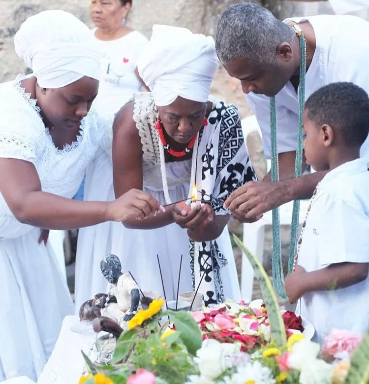
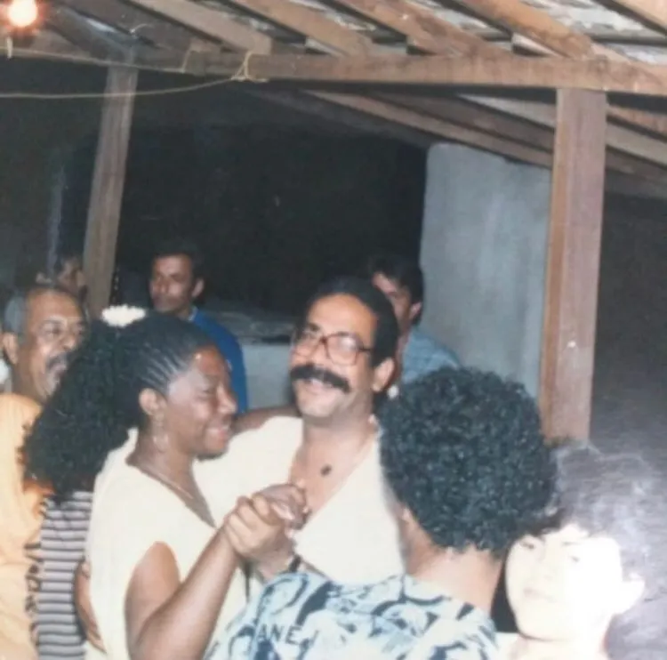
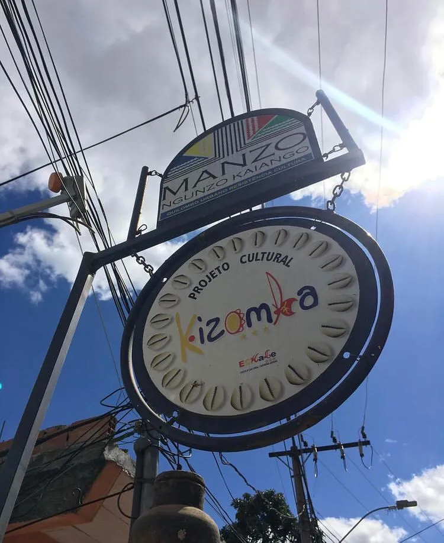
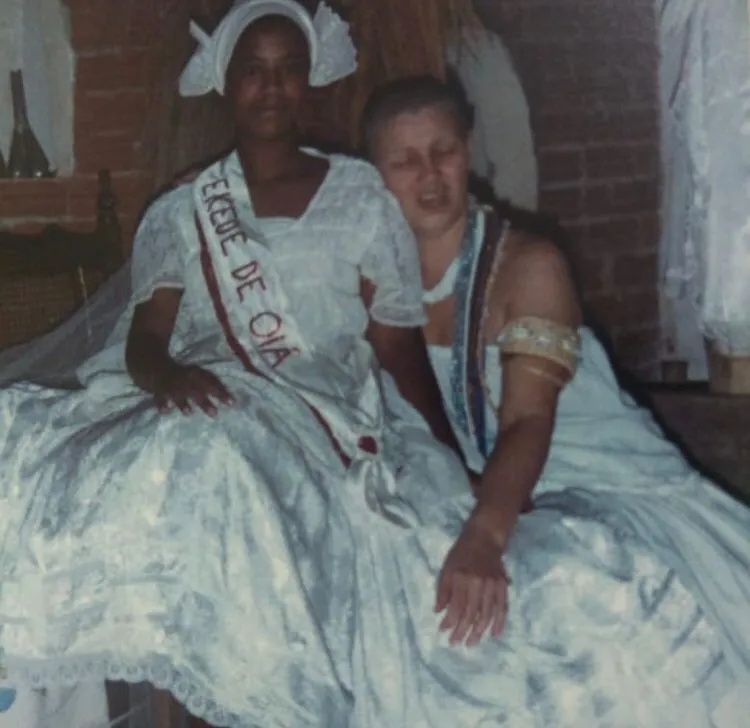
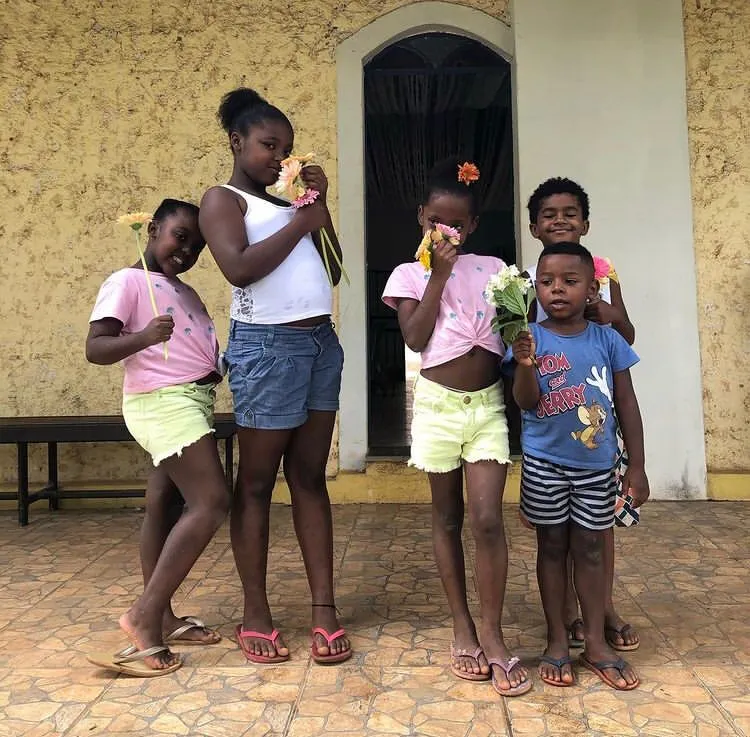
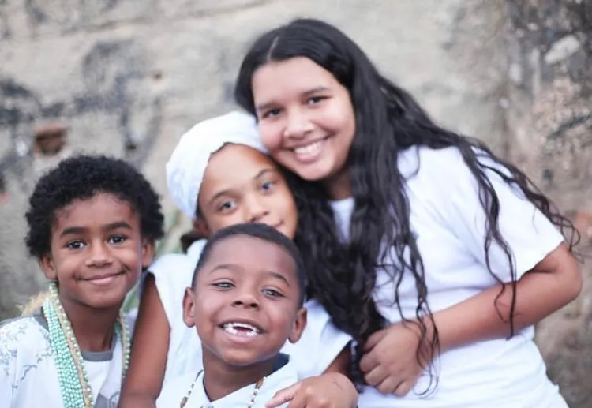
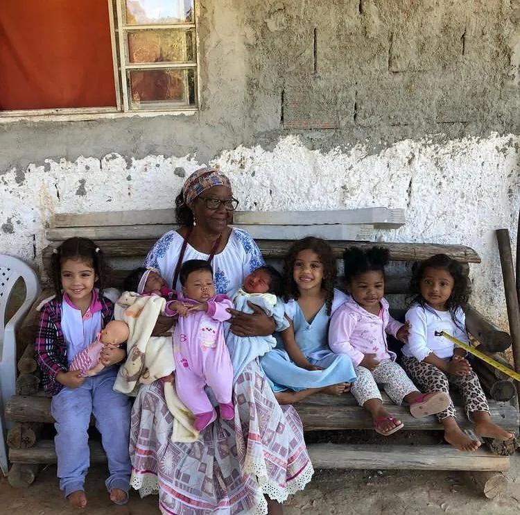

Kilombo Manzo - MG

"Sou Pedro, sou quilombola, nascido no Kilombo Manzo Ngunzo Kaiango, às margens do Aglomerado da Serra, onde através dos projetos da comunidade inicia sua trajetória. Formado em Ballet Clássico e Dança Contemporânea pelo Corpo Cidadão, em Figurino e Produção de Moda pelo SENAC/MG. DJ e Produtor no projeto FERVO, atuando em eventos como Batekoo, Festival Sarará, Classics Hip-Hop e outros. Adotando o vulgo HBS, vem trazendo em seu Setlist nomes LGBTQIA+, da cultura negra e as sonoridades africanas periféricas, latinas e caribenhas."
Tradição do Asè
A Comunidade Manzo Ngunzo Kaiango, que se auto-referência como quilombola, foi fundada na década de 1970 por Mãe Efigênia. Sustenta práticas sociais e culturais específicas, fundamentadas, principalmente, na religiosidade de matriz africana, que é compartilhada entre seus membros. A Comunidade possui sua identidade e território indissociáveis, e o terreiro é percebido e experimentado como o centro vital do grupo. Conforma uma cultura diferenciada e uma organização social própria, que constituem patrimônio cultural afro-brasileiro. Em outubro de 2018, a Comunidade Quilombola Manzo Ngunzo Kaiango foi registrada como Patrimônio Cultural do estado de Minas Gerais, na categoria de lugares.






